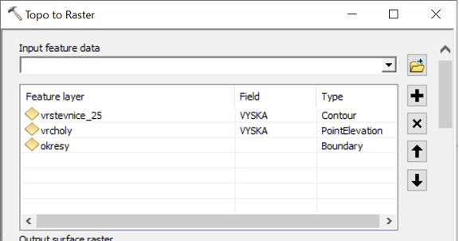

Lekce 18: Rastrové analýzy
Budeme řešit následující úlohu:
Jako vášnivý milovník vína toužíte po vlastní vinici. Nejprve je pro ni však třeba vybrat vhodné území, splňující následující kritéria: bude na svazích se sklonem menším než 20%, s jihovýchodní až jihozápadní orientací a zároveň skryta před zraky nenechavých turistů, kteří by ji mohli z okolních vyhlídek vidět a přijít na ochutnávku hroznů. Jakou rozlohu má vhodné území pro založení vinice?
(Samozřejmě pro reálnou analýzu bychom navíc uvažovali nadmořskou výšku (např. do 400 m n. m.) a půdní typ.)
K dispozici máme (data jsou ke stažení zde):
vrstevnice_25.shp: liniová vrstva vrstevnic s krokem 25 m.vrcholy.shp: bodová vrstva vrcholků kopců.okresy.shp: polygonová vrstva okresů ČR.
Úlohu budeme řešit nejprve pro celou ČR, následně řešení upravíme tak, aby proběhlo postupně pro jednotlivé okresy ČR.
Nastavení prostředí a parametrů
Prvním krokem bude načtení modulů, nastavení prostředí a definování proměnných se vstupními parametry výpočtu:
import arcpy
# Vstupní vrstvy a další parametry
in_vrst = r"C:\cesta\k\souboru\vrstevnice_25.shp"
in_vrch = r"C:\cesta\k\souboru\vrcholy.shp"
in_okre = r"C:\cesta\k\souboru\okresy.shp"
vrst_field = "VYSKA" # Pole ve vrstvě vrstevnic, kde je nadmořská výška
vrch_field = "VYSKA" # Pole ve vrstvě vrcholů, kde je nadmořská výška
out_plochy = r"C:\cesta\kde\má\být\uložen\výsledek.tif"
# Nastavení prostředí
arcpy.env.workspace = r"in_memory"
arcpy.env.cellSize = 250
arcpy.env.overwriteOutput = True
arcpy.env.mask = in_okre
arcpy.CheckOutExtension("Spatial")
Příkaz arcpy.CheckOutExtension('Spatial') zajišťuje zpřístupnění licence extenze Spatial Analyst, kterou budeme pro výpočet potřebovat. Zapnutí extenze v ArcMap je součástí nastavení mapového dokumentu, proto při práci s extenzemi pomocí Pythonu je třeba toto nastavení vždy explicitně udělat. Výraz CheckOut může být matoucí - opravdu se jím extenze zapíná, a nikoli vypíná. Naopak příkazem CheckInExtension se extenze vypíná.
Topo to Raster
Jelikož podmínky pro vinici zahrnují sklon, orientaci svahu a viditelnost, bude prvním krokem naší analýzy vytvoření digitálního modelu terénu. Protože informaci o terénu máme v podobě vrstevnic, nezbývá než použít nástroj TopoToRaster. Ten je z hlediska volání v Pythonu poněkud složitější (viz nápovědu!).
Jak víte, do nástroje TopoToRaster může vstupovat více různých vstupních vrstev, přičemž každá může být jiného typu. Základním vstupem je zpravidla vrstva vrstevnic (typ Contour), doplňkovými vstupy v našem případě budou vrstva vrcholů (typ Point Elevation) a vrstva okresů (typ Boundary). Odpovídá to následujícímu nastavení v okně nástroje:

Každému z typů vstupů odpovídá v balíčku arcpy samostatná třída, která tento typ vstupu reprezentuje. Pro typ Contour je zde třída TopoContour, pro typ PointElevation třída TopoPointElevation a pro typ Boundary třída TopoBoundary (obdobně i pro ostatní typy vstupů). To znamená, že každý ze vstupů je třeba reprezentovat objektem příslušné třídy. Tyto třídy, stejně jako samotný nástroj TopoToRaster, jsou přitom přístupné přes modul sa ("Spatial Analyst"). Vytvoření jednotlivých vstupů bude tedy vypadat následovně:
inContours = arcpy.sa.TopoContour([[in_vrst, vrst_field]])
inPoints = arcpy.sa.TopoPointElevation([[in_vrch, vrch_field]])
inBoundary = arcpy.sa.TopoBoundary([in_okre])
U vrstevnic a vrcholů se vstup zadává jako seznam seznamů: vnější seznam je zde proto, že vrstev s vrstevnicemi (či vrcholy) může být teoreticky více, přičemž všechny se společně zadávají do jediného objektu TopoContour. Vnitřní seznam je zde proto, že ke každé vrstvě vrstevnic či vrcholů je třeba připojit informaci, ve kterém poli jsou hodnoty nadmořské výšky. Vstup Boundary se zadává jako jednoduchý seznam, neboť i vrstev s hranicemi zájmového území by teoreticky mohlo být více.
Z jednotlivých objektů Topo* se následně vytvoří seznam, a ten se předá jako vstup do nástroje TopoToRaster:
dtm = arcpy.sa.TopoToRaster([inContours, inPoints, inBoundary], enforce = "NO_ENFORCE")
Zde je třeba upozornit na základní rozdíl mezi tím, jak v Pythonu funguje většina nástrojů z ArcToolboxu a jak fungují rastrové nástroje z extenze Spatial Analyst. Zatímco návratovou hodnotou většiny ostatních nástrojů je objekt třídy Result, u nástrojů, jejichž výstupem je rastr, je návratovou hodnotou objekt třídy Raster, což je přímo výstupní rastr, nicméně pouze jako vrstva v operační paměti. Výstup se tedy nezapisuje automaticky na disk, a chceme-li jej uchovat (tj. uložit na disk), je třeba tak učinit explicitně v samostatném kroku pomocí metody save, kterou třída Raster disponuje:
dtm.save("C\:cesta\kde\má\být\uložen\rastr\dtm.tif")
Toto chování je ve skutečnosti velmi výhodné: umožňuje nám vykonat při výpočtu celou řadu mezikroků, jejichž výstupy není třeba ukládat na disk. Tam nakonec uložíme až finální výsledek analýzy.
Slope a Aspect
Dalším krokem analýzy je výpočet sklonu nástrojem Slope (opět bude výstupem pouze vrstva třídy Raster neuložená na disk):
slp = arcpy.sa.Slope(dtm, "PERCENT_RISE")
Podobným způsobem vypočítáme aspekt:
aspect = arcpy.sa.Aspect(dtm)
Pokud bychom chtěli některý z rastrů uložit na disk (což nyní nepotřebujeme), můžeme opět použít metodu save:
slp.save("path\to\slope.tif")
aspect.save("path\to\aspect.tif")
Lokální mapová algebra
Podmínka týkající se vyhovujícího sklonu říká, že by měl být menší než 20%. K tomu můžeme buď použít nástroj LessThan:
slp_ok = arcpy.sa.LessThan(slp, 20)
mnohem elegantnější a jednodušší je však využít toho, že modul sa definuje pro standardní matematické operátory speciální význam při použití na objekty Raster. Díky tomu můžeme s rastry provádět výpočty na způsob, jaký dobře znáte z RasterCalculatoru:
slp_ok = slp < 20
Výsledkem je opět vrstva třídy Raster, kterou je v případě potřeby metodou save možné uložit na disk jako rastr v požadovaném formátu.
V případě aspektu máme najít místa, kde je orientace svahu zhruba jižní, tj. mezi jihovýchodem (azimut 135°) a jihozápadem (azimut 225°). Jednou možností by bylo využít matematických a logických operátorů a složit výslednou podmínku průnikem dílčích podmínek: vyhovující aspekt je větší než 135 a zároveň menší než 225:
aspect_ok = (aspect > 135) & (aspect < 225)
Reklasifikace
Jinou možností, jak najít místa s vyhovujícím aspektem, je reklasifikace. Jak známo, základem reklasifikace je tzv. reklasifikační tabulka, což je tabulka o dvou sloupcích, kde levý sloupec definuje původní hodnoty či jejich rozsah, pravý sloupec definuje odpovídající hodnoty v novém, reklasifikovaném rastru. V naší úloze by reklasifikační tabulka vypadala nějak takto:

(Připomeňme, že zahrnutí hodnoty -1 je proto, že touto hodnotou jsou v rastru aspektu kódována plochá území.)
Podobně jako u nástroje TopoToRaster, i do nástroje Reclassify se vstupní reklasifikační tabulka zadává pomocí objektu speciální třídy. Pokud jsou v levém sloupci tabulky jednotlivé hodnoty, použije se objekt třídy RemapValue. Pokud jsou "staré" hodnoty definovány rozsahem hodnot (jako v našem případě), použije se objekt třídy RemapRange, a to následujícím způsobem:
reclass_table = arcpy.sa.RemapRange([[-1, 135, 0], [135, 225, 1], [225, 360, 0]])
Vidíme, že reklasifikační tabulka je do tohoto objektu poslána ve formě seznamu seznamů, kdy vnější seznam je seznamem řádků, vnitřní seznamy reprezentují jednotlivé řádky tabulky. První a druhá hodnota těchto seznamů reprezentují meze daného rozsahu ("Old values"), třetí hodnota reprezentuje novou hodnotu ("New values").
Takto vytvořenou reklasifikační tabulku je možné použít jako vstup do nástroje Reclassify:
aspect_ok = arcpy.sa.Reclassify(aspect, "Value", reclass_table)
Analýza viditelnosti
Dalším krokem je zjistit, která místa nejsou vidět ani z jednoho z vrcholů. Použijeme nástroj Visibility (mohli bychom však stejně dobře použít i starší nástroj Viewshed, který provádí stejný výpočet, jen mí trochu jiné rozhraní). Jak snadno zjistíme v nápovědě, nástroj Visibility má velké množství parametrů. Z nich budeme chtít většinu ponechat ve výchozím nastavení. Budeme však potřebovat nastavit parametr Observation offset, neboť je třeba uvažovat výšku pozorovatele, stojícího vždy na daném vrcholu (uvažujme např. výšku 1,7 m). Jelikož je parametr Observation offset až jedenáctým parametrem v pořadí, je možné nepovinné parametry umístěné před ním, u nichž chceme ponechat výchozí hodnoty, nahradit prázdnými řetězci (prozkoumejte ostatní parametry v nápovědě k nástroji!):
visibility = arcpy.sa.Visibility(dtm, in_vrch, "", "", "", "", "", "", "", "", 1.7)
Jelikož jsme typ analýzy ponechali ve výchozím nastavení jako "FREQUENCY", je výsledkem analýzy viditelnosti rastr, kde je v každé buňce informace o počtu viditelných vrcholů (resp. počtu vrcholů, z nichž je daná buňka vidět). Kdybychom typ analýzy změnily na "OBSERVERS", pak by se ve výsledku daly odlišit jednotlivé vrcholy od sebe.
Jelikož my chceme zjistit, které buňky nejsou vidět zni z jednoho vrcholu, potřebujeme změnit hodnoty 0 (není vidět ani z jednoho vrcholu) na 1 a ostatní hodnoty na 0. To lze buď reklasifikací,
reclass_table = arcpy.sa.RemapRange([[0,0,1], [1,1000,0]])
visibility_ok = arcpy.sa.Reclassify(visibility, "Value", reclass_table)
nebo pomocí nástroje Equal To,
visibility_ok = arcpy.sa.EqualTo(visibility, 0)
nebo pomocí operátoru ==:
visibility_ok = visbility == 0
Poslední způsob je zjevně nejjednodušší.
Spojení podmínek
Výsledné spojení (průnik) podmínek je možné realizovat opakovaným použitím nástroje Boolean And:
plochy_1 = arcpy.sa.BooleanAnd(slp_ok, aspect_ok)
plochy_ok = arcpy.sa.BooleanAnd(plochy_1, visibility_ok)
Nahradíme-li nástroj Boolean And operátorem &, je navíc možné oba kroky spojit do jednoho:
plochy_ok = slp_ok & aspect_ok & visibility_ok
Pochopitelně stejného výsledku dosáhneme i pouhým vynásobením rastrů (kontrolní otázka: proč?):
plochy_ok = slp_ok * aspect_ok * visibility_ok
Do jednoho kroku bychom případně mohli sloučit nejen toto finální spojení podmínek, ale i jednotlivé dílčí podmínky, asi takto:
plochy_ok = (slp < 20) & (aspect > 135) & (aspect < 225) & (visibility == 0)
Celé řešení by tedy mohlo vypadat např. nějak takto (rozhodně to není jediná správná možnost!):
import arcpy
# Vstupní vrstvy a další parametry
in_vrst = r"C:\cesta\k\souboru\vrstevnice_25.shp"
in_vrch = r"C:\cesta\k\souboru\vrcholy.shp"
in_okre = r"C:\cesta\k\souboru\okresy.shp"
vrst_field = "VYSKA" # Pole ve vrstvě vrstevnic, kde je nadmořská výška
vrch_field = "VYSKA" # Pole ve vrstvě vrcholů, kde je nadmořská výška
# Nastavení prostředí
arcpy.env.workspace = r"in_memory"
arcpy.env.cellSize = 250
arcpy.env.overwriteOutput = True
arcpy.env.mask = in_okre
arcpy.CheckOutExtension("Spatial")
# Tvorba DTM (Topo to Raster)
inContours = arcpy.sa.TopoContour([[in_vrst, vrst_field]])
inPoints = arcpy.sa.TopoPointElevation([[in_vrch, vrch_field]])
inBoundary = arcpy.sa.TopoBoundary([in_okre])
dtm = arcpy.sa.TopoToRaster([inContours, inPoints, inBoundary], enforce = "NO_ENFORCE")
# Sklon, aspekt a viditelnost
slp = arcpy.sa.Slope(dtm, "PERCENT_RISE")
aspect = arcpy.sa.Aspect(dtm)
visibility = arcpy.sa.Visibility(dtm, in_vrch, "", "", "", "", "", "", "", "", 1.7)
# Multikriteriální analýza
plochy_ok = (slp < 20) & (aspect > 135) & (aspect < 225) & (visibility == 0)
# Uložení výsledku
plochy_ok.save(out_plochy)
Výpočet plochy
Zbývá ještě vypočítat plochu. K tomu můžeme použít údaj o počtu buněk s danou hodnotou, který najdeme v atributové tabulce výsledného rastru plochy_ok. Vyhovující plochy jsou kódované hodnotou 1. Tabulku rastru můžeme standardním způsobem otevřít kurzorem, do něj však není možné dát jako vstup přímo objekt Raster. Můžeme však využít toho, že jsem výsledný rastr již uložili na disk, a otevřít tak kurzorem tento uložený rastr, jehož adresu máme v proměnné out_plochy:
tab = arcpy.da.SearchCursor(out_plochy, ["Count"], '"Value" = 1')
Otevíráme pole Count, obsahující počty buněk pro jednotlivé hodnoty rastru. Zároveň otevíráme pouze řádek, odpovídající hodnotě 1, což je zajištěno SQL dotazem "Value" = 1. Otevíraná tabulka má tedy jen jeden řádek, na který se dostaneme metodu next:
radek = tab.next()
Počet buněk s hodnotou 1 je tedy první položkou (otevíráme jen jeden sloupec: Count) tohoto řádku:
pocet_bunek = radek[0]
Rozlohu vyhovujících ploch dostaneme vynásobením tohoto počtu buněk druhou mocninou velikosti buňky:
cs = arcpy.env.cellSize
area = pocet_bunek*cs*cs
Zde předpokládáme, že velikost buňky nastavená v Environments odpovídá velikosti buňky našeho výstupního rastru. Alternativně bychom mohlo velikost buňky daného rastru zjistit pomocí funkce Describe:
cs = arcpy.Describe(out_plochy).meanCellWidth
případně pomocí nástroje GetRasterProperties ze sady Data Management Tools:
result = arcpy.GetRasterProperties_management(out_plochy, "CELLSIZEX")
cs = float(result.getOutput(0))
Ať již získáme hodnotu cs (cellsize) tak či tak, následný výpočet plochy můžeme stručně napsat na jeden řádek:
area = arcpy.da.SearchCursor(out_plochy, ["Count"], '"Value = 1"').next()[0]*cs*cs
Řešení zvlášť pro jednotlivé okresy
Nyní celé řešení upravíme tak, aby se výpočet provedl pro každý okres zvlášť. Principem řešení bude pochopitelně cyklus přes všechny okresy. Výstupem budou jednak jednotlivé vrstvy vyhovujících ploch (pojmenované názvy okresů), jednak souhrnná tabulka csv s názvy okresů a rozlohami vyhovujících ploch.
Možných řešení je více, zde si ukážeme následující:
- Kurzorem si otevřeme vrstvu okresů a budeme postupně
forcyklem procházet jednotlivé okresy. - V každém kole cyklu si daný okres si uložíme jako samostatný shapefile (
"in_memory"). - Nastavíme rozsah a masku dle tohoto okresu a celou analýzu provedeme tak, jak jsme ji řešili pro celou ČR.
- Zjištěnou plochu uložíme společně s názvem okresu do výstupní tabulky.
Nejprve upravíme začátek skriptu tak, že adresu výstupního rastru nahradíme výstupní složkou a přidáme adresu výstupní tabulky. Dále také změníme velikost buňky, neboť nyní může v rámci každého okresu analýza proběhnout podrobněji. Dále vypustíme nastavení masky, neboť masku budeme nastavovat pro každý okres zvlášť.
import arcpy
# Vstupní vrstvy a další parametry
in_vrst = r"C:\cesta\k\souboru\vrstevnice_25.shp"
in_vrch = r"C:\cesta\k\souboru\vrcholy.shp"
in_okre = r"C:\cesta\k\souboru\okresy.shp"
vrst_field = "VYSKA" # Pole ve vrstvě vrstevnic, kde je nadmořská výška
vrch_field = "VYSKA" # Pole ve vrstvě vrcholů, kde je nadmořská výška
out_folder = r"C:\cesta\k\výstupní\složce"
out_csv = r"C:\cesta\kde\má\být\uložena\výstupní\tabulka.csv"
# Nastavení prostředí
arcpy.env.workspace = r"in_memory"
arcpy.env.cellSize = 50
arcpy.env.overwriteOutput = True
arcpy.CheckOutExtension("Spatial")
Než začneme procházet v cyklu jednotlivé okresy, otevřeme si výstupní tabulky pro zápis a přidáme hlavičku:
csv = open(out_csv, "w")
csv.write("OKRES;ROZLOHA_VINIC\n")
Nyní můžeme přistoupit k samotnému cyklu. Otevřeme si kurzorem okresy a zahájíme cyklus. Budeme přitom potřebovat jednak název okresu, jednak samotnou geometrii okresu, abychom ji použili jako masku:
tab = arcpy.da.SearchCursor(in_okre, ["NAZOK", "SHAPE@"])
for r in tab:
Hned na začátku si v každém kole cyklu "vytáhneme" z řádku název zpracovávaného okresu a jeho geometrii (toto není nutné, jen pak bude další část přehlednější).
tab = arcpy.da.SearchCursor(in_okre, ["NAZOK", "SHAPE@"])
for r in tab:
nazev_okresu = r[0]
okres = r[1]
Nyní okres využijeme k nastavení prostorového rozsahu (pochopitelně stále zůstáváme odsazeni na úroveň těla cyklu, tj. jednu úroveň za hlavičku for cyklu):
arcpy.env.extent = okres.extent
Jak vidíme, k tomuto nastavením můžeme použít přímo objekt třídy Polygon a jeho vlastnost extent, reprezentující jeden prvek vrstvy okresů. Podobně bychom mohli tento objekt použít i ve většině analýz. Bohužel nastavení masky takto provést nelze, stejně jako nelze použít objekt Polygon jako vstup TopoBoundary v nástroji TopoToRaster. Proto nám nezbyde, než polygon uložit jako samostatný shapefile. To lze např. takto:
okres_shp = arcpy.CopyFeatures_management([okres], "okres.shp")
případně složitěji:
okres_shp = arcpy.CreateFeatureclass_management(arcpy.env.workspace,
"okres.shp",
"POLYGON")
arcpy.da.InsertCursor("okres.shp", ["SHAPE@"]).insertRow((okres,))
Masku nastavovat nemusíme, neboť oříznutí na daný okres vyřešíme v nástroji TopoToRaster pomocí vstupu typu TopoBoundary.
Dále můžeme do těla cyklu (s odpovídajícím odsazení) vložit celou analýzu tak, jak jsme ji vytvořili pro celou ČR, takže celý cyklus bude nyní vypadat nějak takto:
for r in tab:
nazev_okresu = r[0]
okres = r[1]
# Nastavení rozsahu
arcpy.env.extent = okres.extent
# Uložení okresu do nového shapefilu
okres_shp = arcpy.CopyFeatures_management([okres], "okres.shp")
# Tvorba DTM (Topo to Raster)
dtm = arcpy.sa.TopoToRaster([arcpy.sa.TopoContour([[in_vrst, vrst_field]]),
arcpy.sa.TopoPointElevation([[in_vrch, vrch_field]]),
arcpy.sa.TopoBoundary([okres_shp])],
enforce = "NO_ENFORCE")
# Sklon, aspekt a viditelnost
slp = arcpy.sa.Slope(dtm, "PERCENT_RISE")
aspect = arcpy.sa.Aspect(dtm)
visibility = arcpy.sa.Visibility(dtm, in_vrch, "", "", "", "", "", "", "", "", 1.7)
# Multikriteriální analýza
plochy_ok = (slp < 20) & (aspect > 135) & (aspect < 225) & (visibility == 0)
# Uložení výsledku
out_name = os.path.join(out_folder, nazev_okresu + "_vinice.tif")
plochy_ok.save(out_name)
# Výpočet plochy
cs = arcpy.env.cellSize
area = arcpy.da.SearchCursor(out_name, ["Count"], '"Value = 1"').next()[0]*cs*cs
Oproti původnímu kódu jsme provedli následující úpravy:
- Trochu jinak jsme napsali vstupy do nástroje TopoToRaster: předtím jsme si jednotlivé vstupy vytvořili předem do zvláštních proměnných, nyní jsme je vytvořili přímo uvnitř volání nástroje. (Tato úprava nebyla nijak nutná, slouží jen k ukázce různých způsobů, jak danou věc zapsat.)
- Kdekoli jsme předtím používali proměnnou
in_okre, nahradili jsme ji proměnnouokres_shp. - Název výstupu jsme složili z názvu výstupní složky, názvu okresu a koncovky
"_vinice.tif"pomocí funkceos.path.join. Pozor: na začátek skriptu je třeba přidat příkaz k načtení příslušného modulu! - Název výstupního rastru (viz předchozí bod) uložený do proměnné
out_namejsme použili při výpočtu plochy pomocí kurzoru.
Poslední věc, kterou je třeba v rámci cyklu udělat, je zapsat název okresu a rozlohu vyhovujících ploch do výstupní tabulky:
csv.write(nazev_okresu + ";" + str(area) + "\n")
Nakonec, na závěr celého skriptu (tj. až po skončení cyklu), je třeba zavřít otevřenou tabulku a kurzor:
csv.close()
del(tab)
A to je vše. Přidáme-li ještě průběžné hlášení, jaký okres se zrovna zpracovává, bude skript vypadat takto:
# -*- coding: cp1250 -*-
import arcpy, os.path, sys
# Vstupní vrstvy a další parametry
in_vrst = r"C:\cesta\k\souboru\vrstevnice_25.shp"
in_vrch = r"C:\cesta\k\souboru\vrcholy.shp"
in_okre = r"C:\cesta\k\souboru\okresy.shp"
vrst_field = "VYSKA" # Pole ve vrstvě vrstevnic, kde je nadmořská výška
vrch_field = "VYSKA" # Pole ve vrstvě vrcholů, kde je nadmořská výška
out_folder = r"C:\cesta\k\výstupní\složce"
out_csv = r"C:\cesta\kde\má\být\uložena\výstupní\tabulka.csv"
# Nastavení prostředí
arcpy.env.workspace = r"in_memory"
arcpy.env.cellSize = 50
arcpy.env.overwriteOutput = True
arcpy.CheckOutExtension("Spatial")
# Otevření výstupní tabulky pro zápis
csv = open(out_csv, "w")
csv.write("OKRES;ROZLOHA_VINIC\n")
# Otevření okresů kurzorem a zahájení cyklu
tab = arcpy.da.SearchCursor(in_okre, ["NAZOK", "SHAPE@"])
for r in tab:
nazev_okresu = r[0]
okres = r[1]
print(u"Zpracovávám okres " + nazev_okresu + "...")
sys.__stdout__.flush()
# Nastavení rozsahu
arcpy.env.extent = okres.extent
# Uložení okresu do nového shapefilu
okres_shp = arcpy.CopyFeatures_management([okres], "okres.shp")
# Tvorba DTM (Topo to Raster)
dtm = arcpy.sa.TopoToRaster([arcpy.sa.TopoContour([[in_vrst, vrst_field]]),
arcpy.sa.TopoPointElevation([[in_vrch, vrch_field]]),
arcpy.sa.TopoBoundary([okres_shp])],
enforce = "NO_ENFORCE")
# Sklon, aspekt a viditelnost
slp = arcpy.sa.Slope(dtm, "PERCENT_RISE")
aspect = arcpy.sa.Aspect(dtm)
visibility = arcpy.sa.Visibility(dtm, in_vrch, "", "", "", "", "", "", "", "", 1.7)
# Multikriteriální analýza
plochy_ok = (slp < 20) & (aspect > 135) & (aspect < 225) & (visibility == 0)
# Uložení výsledku
out_name = os.path.join(out_folder, nazev_okresu + "_vinice.tif")
plochy_ok.save(out_name)
# Výpočet plochy
cs = arcpy.env.cellSize
area = arcpy.da.SearchCursor(out_name, ["Count"], '"Value = 1"').next()[0]*cs*cs
# Zápis plochy do tabulky
csv.write(nazev_okresu + ";" + str(area) + "\n")
# Úklid
csv.close()
del(tab)